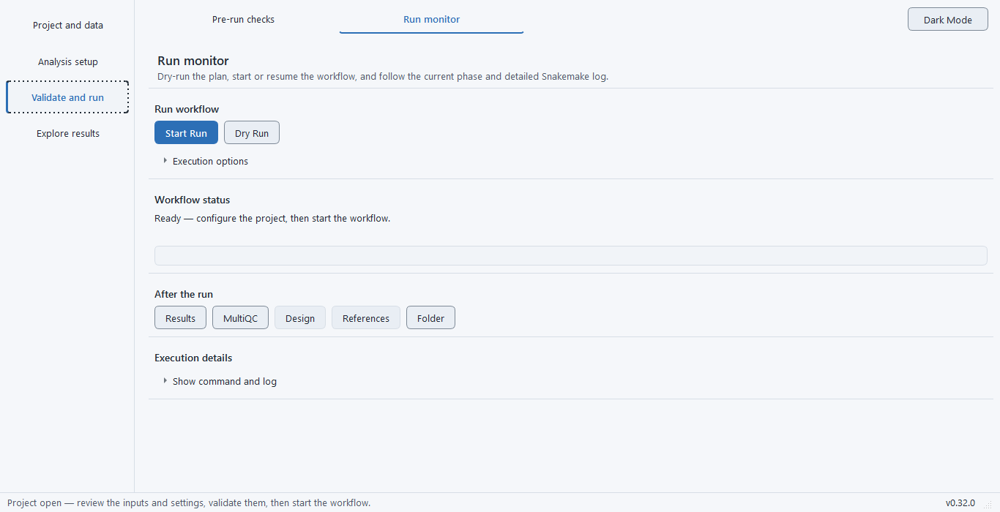

Before you start, ensure the applicable tools are ready, the final inputs have been checked and the project has enough resources. Keep the computer powered and available during a local run.
1. Start the validated run#
On Run monitor, click Start Run. Follow the phase and progress display. Expand command/raw-log details when you need the exact tool message.
Execution controls#
| Setting | What it changes | When to change it / example |
|---|---|---|
| Start Run | Executes the configured workflow. | Use after final input validation and resource review. |
| Dry Run | Inspects the workflow graph without performing its computation. | Use before a long run or after changing a route. |
| Stop | Cancels execution through the application. | Use to stop a run safely; do not close a transient Windows terminal window to control it. |
| Resume | Continues an interrupted workflow, reusing eligible completed steps and rerunning incomplete work. | Resolve the original error first and preserve inputs. Changed content must be revalidated. |
| Unlock | Clears a stale workflow lock after an interruption. | Use only after confirming no active run owns the project. A lock is not a signal to start two runs together. |
2. Recover an interruption#
Reopen the project and use Resume Interrupted Run when offered. Review logs for the cause before resuming after a failure.
A run you stop is shown as Stopped with a WARNING status, and resuming continues from the completed steps. A failed run is shown as Failed (exit code N), or as Failed — a rule reported an error when the launcher returned 0 although a step failed. When the log shows R or Bioconductor packages failing to load, the monitor offers to rebuild the analysis environment from its pinned lock; the command line reports the same failure as exit 5 without that offer. Exit codes and statuses lists every failure state.
3. Review completion and export the record#
After completion, the status message counts the phase checks that reported a warning or a review-required finding and sends you to Pre-run checks, where the run’s own checks are re-read with their findings. Open Figures and tables and result checks. The After the run actions include Folder, References and Design. Reports → Generate Reports creates summaries; Open Results Report opens the self-contained report.
Advanced: command-line interruption
The bulkseq run command streams workflow output and exits non-zero on execution failure. Ctrl-C is acted on during a quiet step as well as a talkative one, because the output is drained on a separate reader thread: the process tree is sent TERM, given up to eight seconds to release the working-directory lock, then sent KILL, and the command exits 130. Retain logs and confirm the process has stopped before another run.
